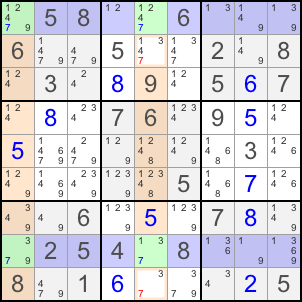

| Back to Course Catalog |
|
X-Wing |
|
X-Wing is an advanced single-digit technique to remove candidates from cells. Pencilmark is required. For a particular candidate, if the possible positions in two rows are the same two columns, you can remove the candidate in the other rows of those two columns. For a particular candidate, if the possible positions in two rows are the same two columns, you can remove the candidate in the other rows of those two columns. Let's look at the example:  In Row 1 and 8, the only possible positions for candidate 7 is column 1 and 5. If R1C1 is 7, then R8C5 is 7. If R1C5 is 7, then R8C1 is 7. In any case, in Column 5, candidate 7 cannot exist other than in Row 1 and 8. You can remove 7 from R2C5 and R9C5. |
| Back to Course Catalog |